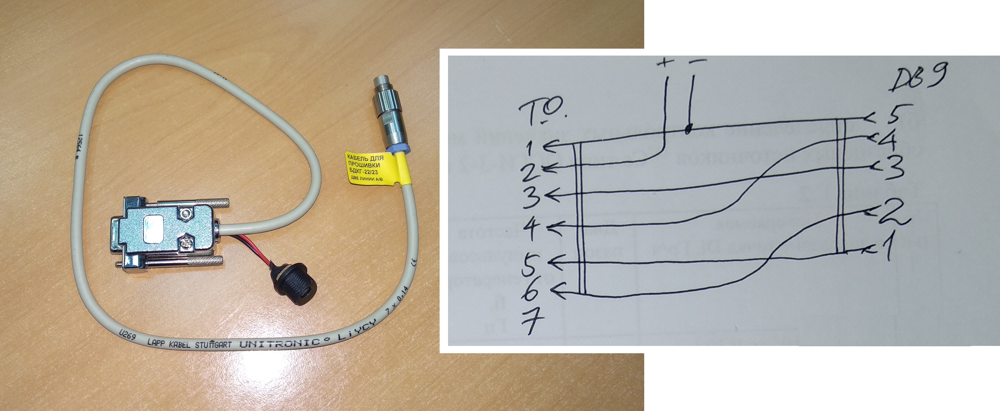
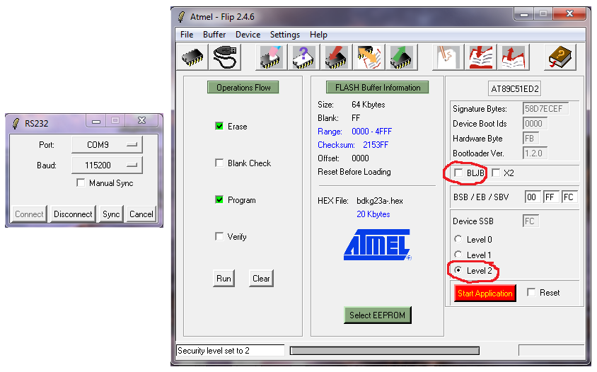
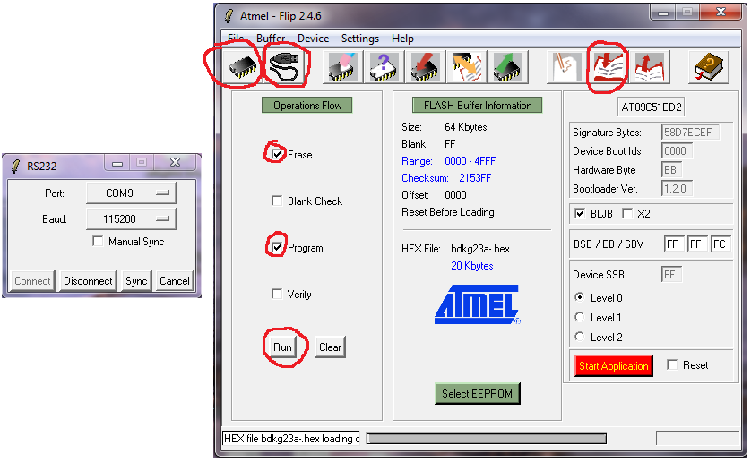
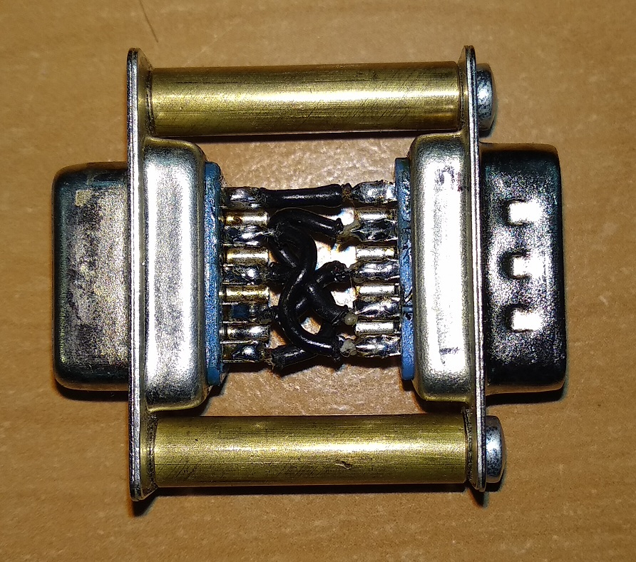
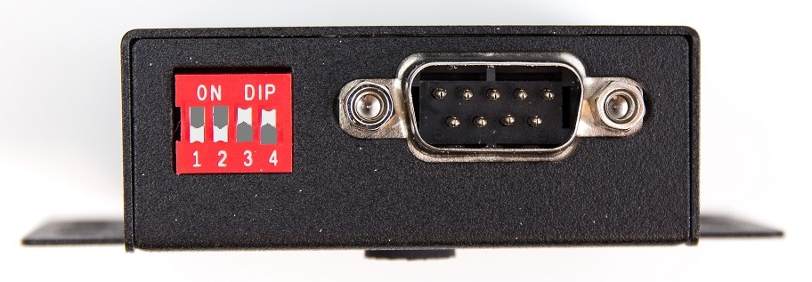
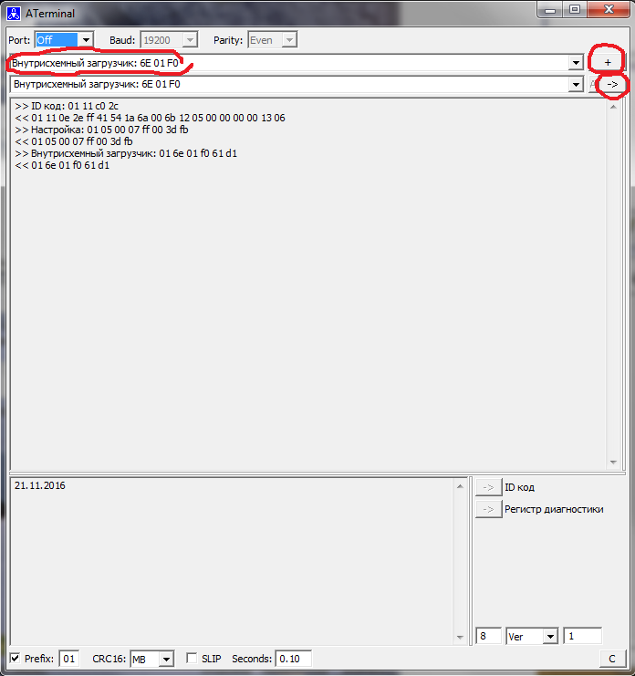

БДКГ-22/23. Прошивка
Если контроллер уже был прошит, подключиться к блоку для прошивки НЕ ПОЛУЧИТСЯ!
Для того чтобы перепрошить блок:
- БДКГ-22 и 23 прошиваются специальным кабелем DB9⟶Fisher с двумя линиями A/B и разъемом питания для 12В 
- Подключается к компьютеру через адаптер USB-COMi-SI-M с нестандартными настройками Есть три версии прошивки:
- bdkg22.hex — для БДКГ-22. Измерение в зивертах.
- bdkg23.hex — для БДКГ-23. Измерение в греях.
- bdkg23а.hex — для БДКГ-23/1 (изначально назывался БДКГ-23А). Измерение в зивертах.
- Шить через Flip:
- Выбрать тип контроллера — AT89C51ED2
- Подключение. Выбрать порт. Скорость — 115500
- Выбрать прошивку
- Нажать Run После окончания процесса прошивки: 
- Снять BLJB
- Поставить Level 2
- Наклеить наклейку с версией прошивки
-


Суть метода заключается в разблокировке загрузчика через Terminal
- Подключиться через прошивочный кабель
- Подать питание на кабель
- Кабель к USB-COMi адаптеру подключить через переходник (схема) 
{kind=link}
- На USB-COM адаптере выставить: 
- Запустить Terminal для БДКГ-22 (если такого нет, вот настройки Command)
- Выбрать com-порт
- Скорость — 19200 (Baud)
- (Для проверки можно нажать ID, блок должен ответить)
- Выбрать: "Настройка", "+", "->"
- Выбрать: "Внутрисхемный загрузчик", "+", "->"  БД разблокирован (пока подключено питание)
- Порт: выбрать "Off" (или закрыть Flip), чтобы освободить порт
- Подключить кабель к USB-COM адаптеру без переходника (ПИТАНИЕ ОТ КАБЕЛЯ НЕ ОТКЛЮЧАТЬ! иначе блок опять заблокируется)
- На адаптере поставить:
- Теперь можно шить стандартным способом (через Flip)